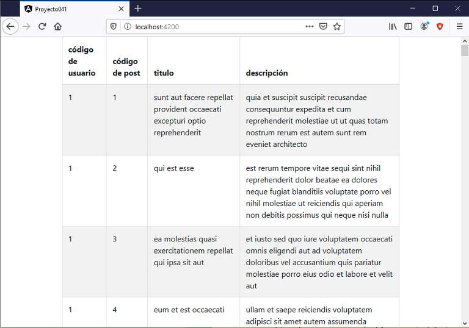

Crear una componente llamada TablaComponent y cuyo selector debe llamarse 'boot-tabla'.
Mediante dos propiedades se deben poder cargar los titulos y filas de la tabla.
Probar la componente recuperando los datos de un servidor público. Recuperar del servidor jsonplaceholder.typicode.com un archivo JSON con los datos de 100 post de un blog ficticio.
Crearemos primero el proyecto
ng new proyecto041
Instalamos el Bootstrap original con alguna de las tres formas vistas en conceptos anteriores, mediante CDN o localizandolo en la capeta 'assets' o mediante npm.
Crearemos el servicio que recuperará desde el servidor público los datos de todos los post:
ng generate service postblog
Modificamos el archivo para recuperar los datos del servidor, debemos importar la clase 'HttpClient' e inyectar al constructor la referencia de un objeto de dicha clase al cual llamamos 'http':
import { Injectable } from '@angular/core';
import { HttpClient } from '@angular/common/http';
@Injectable({
providedIn: 'root'
})
export class PostblogService {
constructor(private http: HttpClient) { }
retornar() {
return this.http.get("https://jsonplaceholder.typicode.com/posts");
}
}
El método 'retornar' será llamado desde la componente principal, este método mediante el objeto de la clase HttpClient llama al método get y le pasa como parámetro la URL del servidor que retornará el archivo JSON con los datos de 100 post.
Modificamos el archivo app.module.ts importando la clase HttpClientModule para poder emplear la clase 'HttpClient' que definimos en la clase 'PostblogService':
import { BrowserModule } from '@angular/platform-browser';
import { NgModule } from '@angular/core';
import { AppComponent } from './app.component';
import { HttpClientModule } from '@angular/common/http';
@NgModule({
declarations: [
AppComponent
],
imports: [
BrowserModule,
HttpClientModule
],
providers: [],
bootstrap: [AppComponent]
})
export class AppModule { }
Crearemos la componente de tabla e indicamos como prefijo para la nueva etiqueta la cadena 'boot' (la idea es recordarnos que esta componente utiliza la librería de Bootstrap):
ng generate component tabla --prefix boot
Modificamos el archivo 'tabla.component.ts':
import { Component, OnInit, Input } from '@angular/core';
@Component({
selector: 'boot-tabla',
templateUrl: './tabla.component.html',
styleUrls: ['./tabla.component.css']
})
export class TablaComponent implements OnInit {
@Input() titulos: any;
@Input() filas: any;
objectKeys = Object.keys;
constructor() { }
ngOnInit(): void {
}
}
Definimos las dos propiedades que se inicializan los titulos y las filas de la componente:
@Input() titulos: any; @Input() filas: any;
Guardamos en un atributo la referencia del método keys del objeto 'Object', para usarlo luego en la plantilla:
objectKeys = Object.keys;
Modificamos el archivo 'tabla.component.html':
<table class="table table-striped table-bordered">
<thead>
<tr>
<th scope="col" *ngFor="let titulo of titulos">
{{titulo}}
</th>
</tr>
</thead>
<tbody>
<tr *ngFor="let fila of filas">
<td *ngFor="let key of objectKeys(fila)">
{{fila[key]}}
</td>
</tr>
</tbody>
</table>
Utilizamos dos for anidados para recorrer cada fila y el for interno recorre las celdas de cada fila:
<tr *ngFor="let fila of filas">
<td *ngFor="let key of objectKeys(fila)">
{{fila[key]}}
</td>
</tr>
Ahora nos queda consumir la componente 'boot-tabla', esto lo haremos desde la componente principal de nuestra aplicación Angular.
Modificamos el archivo 'app.component.ts':
import { Component, OnInit } from '@angular/core';
import { PostblogService } from './postblog.service';
@Component({
selector: 'app-root',
templateUrl: './app.component.html',
styleUrls: ['./app.component.css']
})
export class AppComponent implements OnInit {
post : any;
titulosColumnas = ['código de usuario', 'código de post', 'titulo', 'descripción'];
constructor(private postblogService: PostblogService) { }
ngOnInit() {
this.postblogService.retornar()
.subscribe(result => this.post = result)
}
}
Modificamos el archivo 'app.component.html':
<div class="container"> <boot-tabla [titulos]="titulosColumnas" [filas]="post" *ngIf="post!=null"></boot-tabla> </div>
Ahora ejecutemos la aplicación:
ng serve -o
Tenemos como resultado:
Podemos probar esta aplicación en la web aquí.